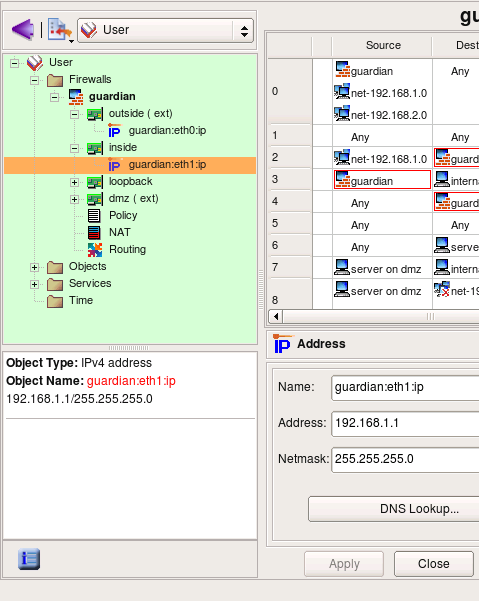
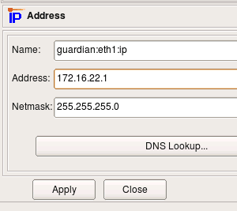
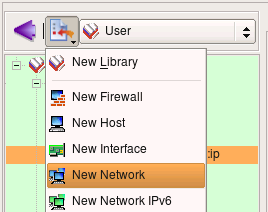
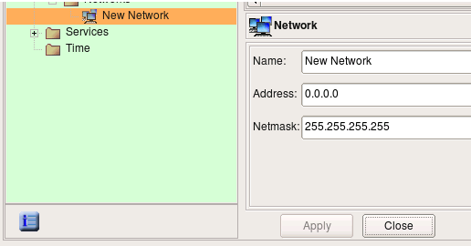
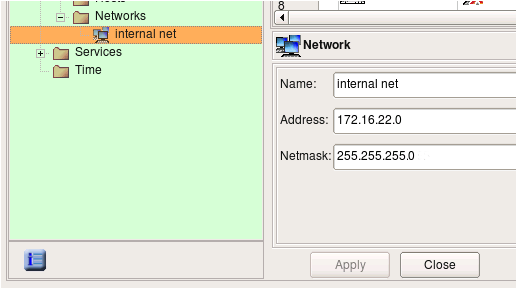
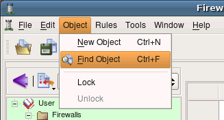
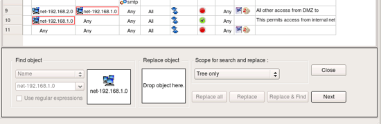
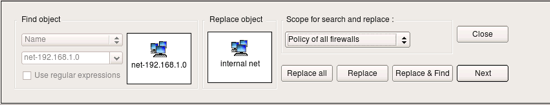
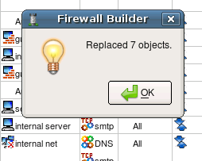

Lets look at the IP address of the internal interface of the firewall. The address used in the template is "192.168.1.1" with netmask "255.255.255.0". This is rather typical address used for small and home networks. Some commercial firewall appliances come preconfigured with this address.
If address 192.168.1.0/24 matches address of your local network, you can skip this part of the guide and move to the page 4. Otherwise, you need to reconfigure the address of the internal interface of the firewall object that you just created in fwbuilder and also change address object used in the policy rules. Start with changing address attribute (and possibly netmask, if necessary) of the object guardian:eth1:ip as shown in the screenshot:
Now we need to change IP address used in the rules. To do this, we create new Network object with correct address and replace object net-192.168.1.0 in all rules with this new network object.
Use new object menu to create Network object.
New Network object is created with default name 'New Network' and IP address 0.0.0.0.
Edit object name and address, then hit "Apply".
Use menu Object / Find to activate search and replace dialog. The Find and Replace dialog opens at the bottom of the right hand side panel in the main window, below the policy rules view.
Locate object object net-192.168.1.0 in any policy rule where it is used or in its location in the tree in library Standard and drag and drop it to the left object well in the search and replace dialog as shown on the screenshot:
Change the scope setting to "Policy of all firewalls". If you have many firewalls in the tree, use scope "policy of the opened firewall" instead. Locate new Network object you just created in the tree and drag and drop it to the right object well in the search and replace dialog as shown on the screenshot:
NOw hit "Replace all" button. Pop-up dialog should appear and report how many replacemens the program had to make in all rules of the firewall. Note that the replacement is done not only in the policy rules, but in NAT rules as well.
Now that you have created a new object and replaced old network object with new one in all rules, do not forget to save data to a file using menu File/Save
| Previous | Next |